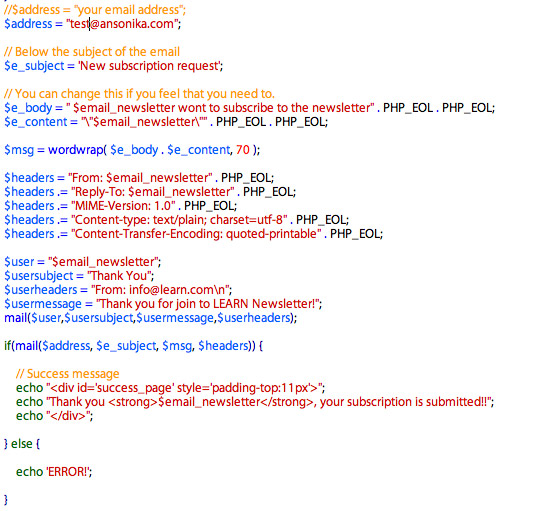
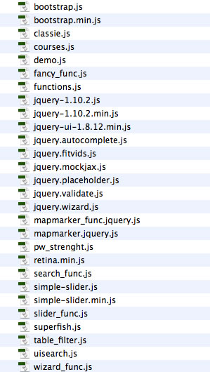
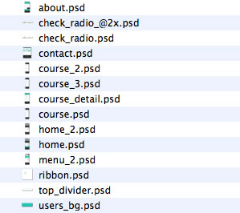

Created: 18 April 2014
Last update: 9 December 2014
By: Ansonika
Thank you for purchasing my theme. If you have any questions that are beyond the scope of this help file, please feel free to email via my user page contact form here. If you are happy with the theme, please TAKE A MOMENT TO RATE IT on the ThemeForest website. Thanks so much!
V1.5 9 December 2014
- Added a photo and video gallery page.
- Fix Revolution slider Onload bug
- Fix flashing menu bug on mobile devices
- Added sticky nav feature for fullwidth versions
HOW TO UPDATE FROM PREVIOUS VERSIONS (always make a copy/backup of your site files before to proceed).
Be sure to copy the lines of code or css not from the examples below but from the latest version files of LEARN. == Revolution slider
1) Add the class="sliderwrapper" on the html page that contain the slider
<div class="tp-banner" >
<ul class="sliderwrapper"> <!-- SLIDE -->
..........
2) Copy and paste the class that you will find in style.css under the comment /** VERSION 1.5 CSS Updated **/ == Flashing menu bug on mobile devices
1) Open the last js/function.js....copy these lines of code
// MENU UPDATED V 1.5=============== //
if ( $(window).width() > 767) {
jQuery('ul.sf-menu').superfish({
animation: {opacity:'show'},
animationOut: {opacity:'hide'}
});
}
else {
jQuery('ul.sf-menu').superfish({
animation: {opacity:'visible'},
animationOut: {opacity:'visible'}
});
} and paste ovewriting the old one
// MENU =============== //
jQuery('ul.sf-menu').superfish();
== Sticky nav for Fullwidth versions
1) Open the last js/function.js....copy these lines of code on your functions.js // STICKY NAV V.1.5========= //
$(window).scroll(function() {
if ($(this).scrollTop() > 1){
$('nav').addClass("sticky");
}
else{
$('nav').removeClass("sticky");
}
}); 2) Copy from style.css this class
nav.sticky {position: fixed;width: 100%;top:0;left:0;z-index:9;} and under the media query (to disable the stick nav on mobiles):
@media (max-width: 480px) {
/** VERSION 1.5 CSS New ==================== **/
nav.sticky {position: static;}
/** End 1.5 CSS New ==================== **/ == Gallery page
1) Copy and paste the gallery folder into your img folder 2) In style.css copy and paste these lines
/* Gallery page */
.picture {..}
.picture img {..}
.photo_icon {..}
.photo_icon i {..} 3) From js/functions.js copy and paste these lines // HOVER IMAGE MAGNIFY V.1.5========= // $(".photo_icon").css({'opacity':'0'});
$('.picture a').hover( function() { $(this).find('.photo_icon').stop().fadeTo(800, 1); }, function() { $(this).find('.photo_icon').stop().fadeTo(800, 0); } ) 4) Copy and paste into your js folder the fancy_func.js and the fancybox folder 5) Copy and paste in your site root gallery.html
V1.4 4 November 2014
- Respond and Hml5Shiv fixed for IE8 in the head of the page: the links provided from here http://getbootstrap.com/getting-started/ should be http and not https.
WRONG
<!--[if lt IE 9]>
<script src="https://oss.maxcdn.com/libs/html5shiv/3.7.0/html5shiv.js"></script>
<script src="https://oss.maxcdn.com/libs/respond.js/1.3.0/respond.min.js"></script>
<![endif]--> OK
<!--[if lt IE 9]>
<script src="http://oss.maxcdn.com/libs/html5shiv/3.7.0/html5shiv.js"></script>
<script src="http://oss.maxcdn.com/libs/respond.js/1.3.0/respond.min.js"></script>
<![endif]-->
V1.3 3 July 2014
- Added a Boxed version
- Added 2 color scheme
- Added member page (with event calendar)
- Added a user logged panel on header
- Fixed icon on megamenu disallignement on Firefox
- Added new pricing tables styles
- Add Teacher profile page
- Change slider images size
- Read details of the update and how to change colors
V1.2 21 May 2014
- Added Megamenu
- New pages: course_details_4.html, events_news_list.html, news_detail.html, teachers.html, course_detail_page_txt.html, course_detail_page_video.html
- New css/single_course.css
- Add breadcrumbs
- Fix some minor css
V1.1 13 May 2014
- Added a short code page
This theme has a fixed centered layout 1170px. It's based on Boostrap 3 framework grid. It come with 3 color scheme
The css files are inside the css folder.
To modify colors, typografy, button style ecc....find the realtive commen line in base.css. Below how the file is organized:
STYLE.CSS STRUCTURE:
1. SITE STRUCTURE and TYPOGRAPHY
2. PAGES AND CONTENT
3. FORMS
3. COMMON
4. MEDIA QUERIES
Change the logo
To change the logo, simply use your PNG24 file. Keep in mind you have to setup the dimensions of your logo.
OPEN STYLE.CSS
a#logo {
width:150px;
height:36px;
background:url(../img/logo.png) no-repeat 0 0;
text-indent:-9999px;
display:block;
}
mobile version: under @media (max-width: 480px)
a#logo {
width:37px;
height:36px;
background:url(../img/logo_mobile.png) no-repeat 0 0;
}
REVOLUTION SLIDER
Please refer this DOCUMENTATION
Change the button colors, and main typography styles
It's all placed at the top of styles.css under the section 1.SITE STRUCTURE and TYPOGRAPHY:
/** simple drop down **/ <li class="normal_drop_down">
<a href="#">Course</a>
<div class="mobnav-subarrow"></div>
<ul>
<li><a href="courses_grid.html">Courses grid</a></li>
<li><a href="courses_list.html">Courses list</a></li>
<li><a href="course_details_4.html">Course details v1</a></li>
<li><a href="course_details_1.html">Course details v2</a></li>
</ul>
</li> for a simple drop down use the class="normal_drop_down" and remember always use class="mobnav-subarrow"
for the mobile version /** mega drop down **/
<li class="mega_drop_down">
<a href="#">Pages (Megamenu)</a>
<div class="mobnav-subarrow"></div>
<div class="sf-mega">
<div class="col-md-4 col-sm-6">
<h5>Communicate</h5>
<ul class="mega_submenu">
<li><a href="about_us.html">About us</a></li>
<li><a href="blog.html">Blog</a></li>
</ul>
</div> <div class="col-md-4 col-sm-6">
<h5>Communicate</h5>
<ul class="mega_submenu">
<li><a href="about_us.html">About us</a></li>
<li><a href="blog.html">Blog</a></li>
</ul>
</div> <div class="col-md-4 col-sm-6">
<h5>Communicate</h5>
<ul class="mega_submenu">
<li><a href="about_us.html">About us</a></li>
<li><a href="blog.html">Blog</a></li>
</ul>
</div>
</div>
</li> for the mega menunu drop down use the class in bold....inside the sf-mega you can place any type of columns.
Menu and Megamenu
It's all placed at the top of styles.css under the section 1.SITE STRUCTURE and TYPOGRAPHY:
/** Typography **/ ........ /** List **/
..... /** Links **/
..... /** Buttons **/
..... etc...
THE GRID
Please refer to this documentation Boostrap
For user that wont to update from previous version, check in style.css and superfish.css this comments:
FOR NEW STYLES
/** VERSION 1.3 New CSS ==================== **/ FOR UPDATED STYLES
/** VERSION 1.3 CSS Updated ==================== **/
For user that wont change the colors i've created a css file called color_scheme.css in css folder. Edit as you prefer or start from one of the 3 provided. Place color_scheme.css in your html files in the following position...in order to overrride the default color styles
<!-- CSS -->
<link href="css/bootstrap.min.css" rel="stylesheet">
<link href="css/superfish.css" rel="stylesheet">
<link href="css/style.css" rel="stylesheet">
<link href="fontello/css/fontello.css" rel="stylesheet">
<!-- color scheme css -->
<link href="css/color_scheme.css" rel="stylesheet">
<!--[if lt IE 9]>
<script src="https://oss.maxcdn.com/libs/html5shiv/3.7.0/html5shiv.js"></script>
<script src="https://oss.maxcdn.com/libs/respond.js/1.3.0/respond.min.js"></script>
<![endif]-->
To convert the layout from fullwidth to boxed.....add this id=boxed to the body tag:
<body id="boxed">
All the files you need are located in asset folder. If you need to change the allert messages open assets/validate.js. Below an example taken from newsletter.php; all the files are well commented.

If you doesn't recieve the email please first check:
1) Your spam folder
2) If you hosting requires special settings and support php language
3) If your email has to be managed from the same hosting provider
Susbcription wizard
This form works a little bit different...it use a different php logic.. Below some basic settings.
Change the main background color
Open style.css search for this class
#top-area {
background-color:#1ab9a7;
height: 500px;
}
Add one more step to the wizard
Each step is defined by a div, so simply duplicate one of them. Below an example of the structure:
<div class="step">
<div class="row">
<h3 class="col-md-10">Enter your personal info</h3>
<div class="col-md-10">
.....
</div><!-- end col-md-10 -->
</div><!-- end row -->
</div><!-- end step-->
Make an input field, select or radio/checkbox required or not.
Simply add or remove the class "required" to the element.
Add one more question with checkbox answer
Open the HTML page. As you can see the name of the input has to be the same with at the end [], each one have a different value.
<h3>How did you hear about our company?</h3> <ul class="data-list-2">Open survey apply_send.php and add the lines of code in bold into the the existing code
<li><input name="question_3[]" type="checkbox" class="required" value="Google"><label>Google</label></li>
<li><input name="question_3[]" type="checkbox" class="required" value="A friend"><label>Friend</label></li> <li><input name="question_3[]" type="checkbox" class="required" value="Print"><label>Print</label></li> </ul>
$mail = $_POST['email'];
/*$subject = "".$_POST['subject'];*/
$to = "test@ansonika.com";
$subject = "Survey from ANNOVA";
$headers = "From: Survey from ANNOVA ";
$message = "USER INFO\n";
$message .= "\nName: " . $_POST['firstname'];
$message .= "\nLast Name: " . $_POST['lastname'];
$message .= "\nEmail: " . $_POST['email'];
$message .= "\nCountry: " . $_POST['country'];
$message .= "\nHow many children: " . $_POST['quantity'];
$message .= "\nAge: " . $_POST['age'];
$message .= "\nGender: " . $_POST['gender'];
$message .= "\nTerms and conditions: " . $_POST['terms'] . "\n";
$message .= "\nOverall satisfaction value: " . $_POST['rate'] . "\n";
$message .= "\nHow did you heard about our company?\n" ;
foreach($_POST['question_1'] as $value)
{
$message .= "- " . trim(stripslashes($value)) . "\n";
};
$message .= "\nDo you think to suggest our company to a friend or parent?: " . $_POST['question_2'];
$message .= "\nYour question?\n" ;
foreach($_POST['question_3'] as $value)
{
$message .= "- " . trim(stripslashes($value)) . "\n";
};
$message .= "\nOptional message: " . $_POST['message_suggest_no'];
//Receive Variable
$sentOk = mail($to,$subject,$message,$headers); This theme use These Javascript.

Inlcuded with the theme there are some pages, and two psd with the radio anc checkbutton graphics (@2x is for retina images) You can edit and change the color as you wont; if you change the sizes of theme be sure to update the css located here: check_radio/skins/square/aero.css.

I've used the following scripts, plugins or frameworks as listed.
Once again, thank you so much for purchasing this theme. Please take a moment to rate it from your Downloads page.
Ansonika